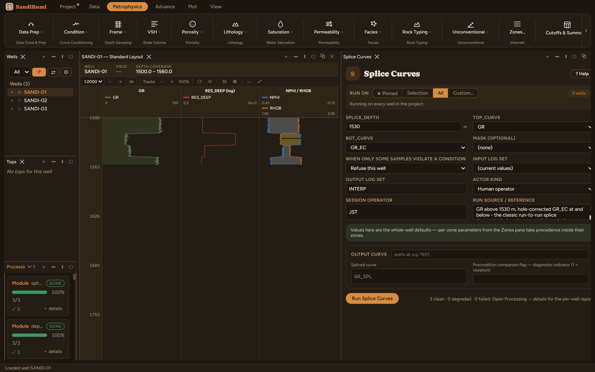

Splice Curves joins two curves at a stated depth: the top curve above the
splice depth, the bottom curve at and below it, written as a new curve with
neither input modified. This is the classic run-to-run splice: a well logged
in two descents, each run covering part of the hole, combined into one
continuous curve for interpretation.
The physics
None; the operation is a selection, not a computation. Which makes the
petrophysics entirely about the splice depth: pick it inside an interval
where both runs read the same rock, ideally a thick homogeneous bed, so any
calibration difference between the runs shows up as a visible step at the
splice rather than being hidden at a bed boundary where a step looks
geological.
The picks and why
SPLICE_DEPTH 1530 m, demonstrated by splicing the raw gamma
ray (above) onto its hole-corrected version (below), a stand-in for two
runs of the same tool. There is no shipped default because the depth is a
fact about your two runs' overlap, not a convention.
The verification is sample-exact, run live: above 1530 m the
spliced curve differs from the top curve by 0.00000 at every
sample, and at and below by 0.00000 from the bottom curve. A
splice either reproduces its inputs exactly on each side or something is
wrong; there is no partial credit.
Step by step
Overlay both runs in a log view and choose the splice depth inside
their overlap, in rock both runs read cleanly.
Open Petrophysics ▸ Data Prep ▸ Splice Curves.
Select the top curve, the bottom curve, and the depth.
Fill the custody line and press Run Splice Curves.
Two curves and one depth. The output takes the top curve's name
with a splice suffix.
Reading the result
3 clean. Check both sides in the Database Inspector; each maximum
absolute difference should be exactly zero:
SELECT MAX(ABS(sp.value - s.gr))
FROM computed_curves sp
JOIN standard_curves s ON sp.well_id = s.well_id AND sp.depth = s.depth
WHERE sp.curve_name = 'GR_SPL' AND sp.depth < 1530

Above the depth the top run, below it the bottom run, both
reproduced exactly.
QC and pitfalls
Zoom the log view to the splice depth after running. A visible step
there is real information: the two runs disagree about the same rock, and
the disagreement belongs to normalization or calibration, not to the
splice.
A splice asserts the two runs are on the same depth reference. If the
boundary that should be continuous jumps at the splice, depth-shift the
mis-depthed run first (previous chapter), then splice.
Splicing curves of different physical meaning (a raw and an
environmentally corrected run, as in this demonstration) is fine for
display and wrong for interpretation; interpret from one consistent
treatment on both sides.